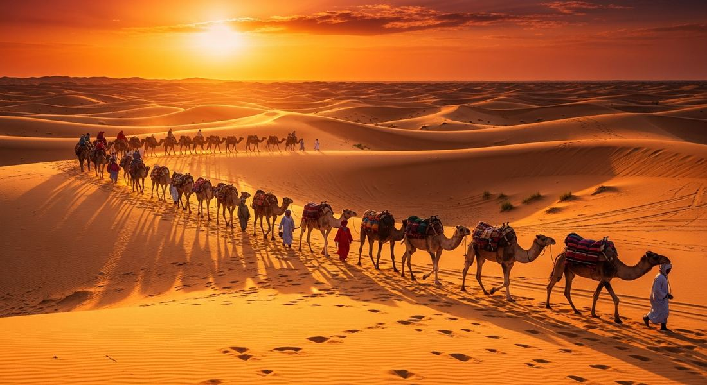
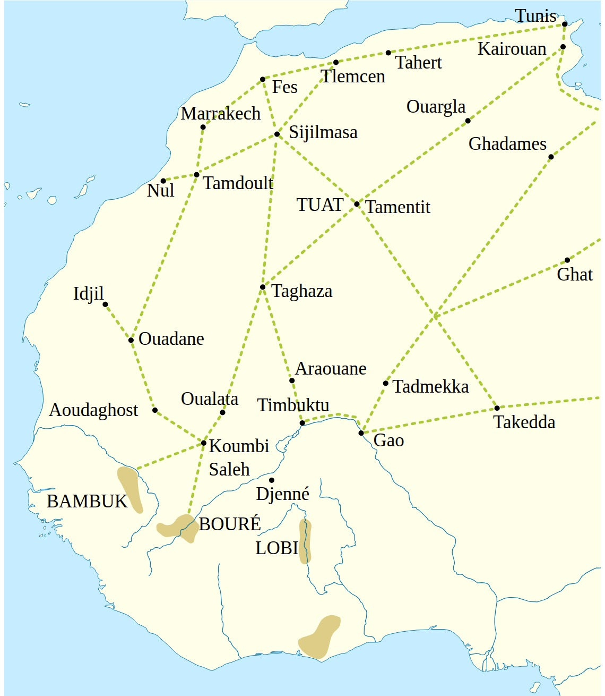
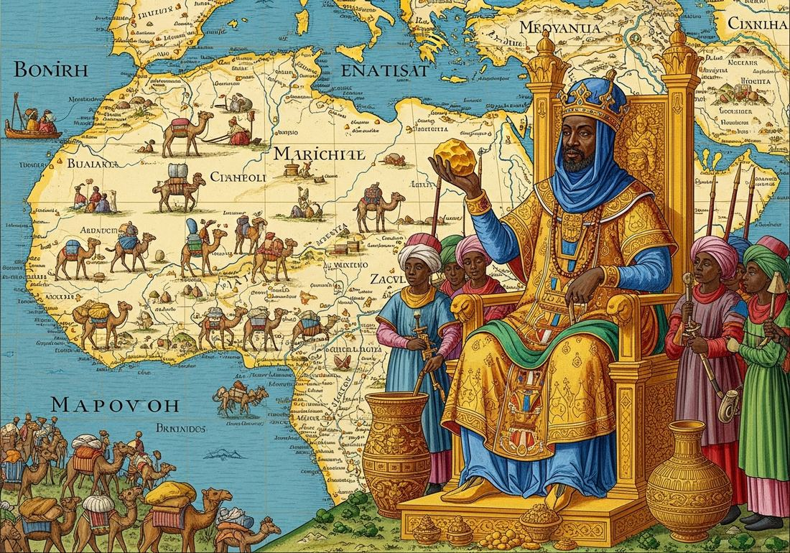
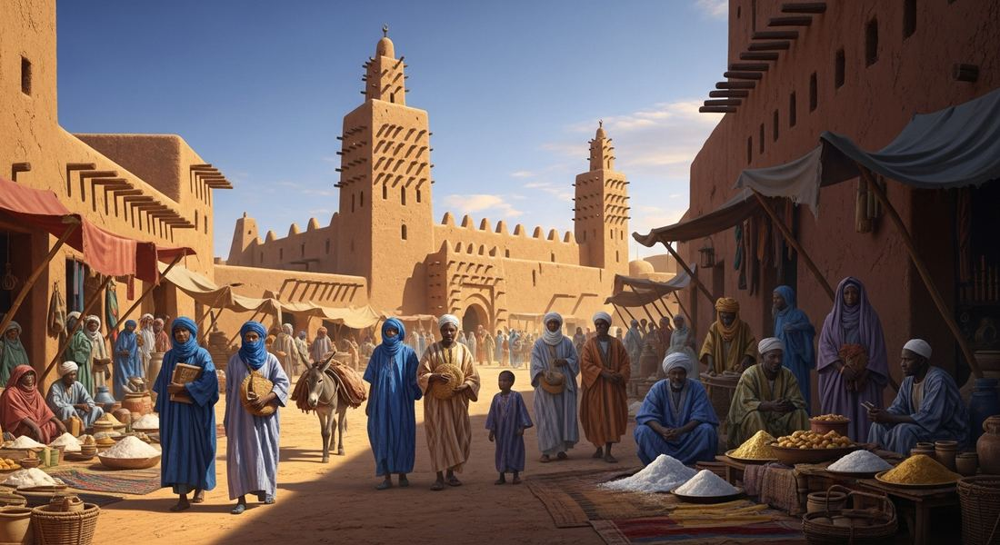

2.4 Trans-Saharan Trade Routes
Each point below answers one of this topic's Learning Objectives.
- Causes and effects: Two factors made trans-Saharan trade grow: technology, the North African camel saddle (c. 300 CE) allowed camels to carry up to 600 lbs of cargo for weeks without water, turning the Sahara from an impassable barrier into a viable corridor, and geographic specialization, West Africa had abundant gold but almost no salt, the Sahara had massive salt deposits but no gold, and North Africa had manufactured goods and Mediterranean connections, so each region needed what the other had. The effects were just as significant: Islam spread peacefully into West Africa through sustained contact with North African Muslim merchants, and rulers converted voluntarily because it gave them access to Islamic trade networks, commercial legal frameworks, and cultural prestige. Timbuktu grew into a center of Islamic scholarship with an estimated 25,000 students and hundreds of thousands of manuscripts in mathematics, astronomy, medicine, and law, commercial wealth funding cultural achievement. West African gold flooded Mediterranean markets, and enslaved people moved northward, connecting West Africa into the broader Afro-Eurasian world for the first time.
- Mali's expansion: Mali grew wealthy by controlling the territory between the goldfields and the trans-Saharan routes, taxing every caravan without needing to mine gold or produce salt itself. This toll-road model made Mali's emperors among the wealthiest rulers in the medieval world. Mansa Musa's 1324 hajj (60,000 attendants, tons of gold distributed in Cairo) crashed the Egyptian gold price for a decade and put Mali on European maps for the first time, showing how pilgrimage routes doubled as intercontinental information networks. Mali's political stability and Islamic identity made it a trusted commercial partner, dramatically expanding trade volume and reliability.
Try each question before revealing the answer.
1. The Sahara Desert was considered uncrossable for most of human history, yet trans-Saharan trade expanded dramatically around 300 CE. What single technological development most directly accounts for this transformation?
2. In some medieval West African markets, salt and gold were traded pound-for-pound. A modern economist says this perfectly illustrates one of the foundational principles of all markets. Which principle?
3. The Mali Empire grew wealthy by taxing trade passing through its territory, even though Mali itself did not mine the gold or manufacture the salt driving the trade. How does this compare to the economic strategy of the Sultanate of Malacca on the Indian Ocean?
4. Islam spread across West Africa primarily through trans-Saharan trade routes, and most West African rulers adopted it voluntarily. How did this pattern of religious conversion differ from early Islamic expansion in the Arabian Peninsula and Persia?
5. The 1375 Catalan Atlas, made in Majorca, Spain, shows a crowned African king labeled "Rex Melly" holding a gold nugget, even though the Majorcan cartographers had never visited West Africa. What does this source most directly reveal?
- Explain the causes and effects of the growth of trans-Saharan trade
- Explain how the expansion of empires, especially Mali, influenced trade and communication over time
Tap a term for its definition.
-
Definition: A large organized group of merchants and pack animals traveling together, typically across desert. Significance: Made the Sahara crossing viable and safer; the basic organizational unit of trans-Saharan commerce, sometimes numbering thousands of camels.
-
Definition: A specialized saddle that allowed riders to control camels and load them with heavy cargo. Significance: The key technological innovation that made trans-Saharan trade possible; without it, camels could not be effectively used as pack animals across the desert.
-
Definition: A powerful West African empire (c. 1235–1600) that controlled trans-Saharan gold and salt trade. Significance: By controlling the goldfields and taxing all trade passing through its territory, Mali accumulated extraordinary wealth and stabilized trade routes across the region.
-
Definition: Emperor of Mali (reigned 1312–1337); widely considered the wealthiest person in medieval history. Significance: His 1324 hajj introduced Mali's wealth to the world, caused inflation in Cairo by flooding the gold market, and funded the construction of Timbuktu as a center of Islamic learning.
-
Definition: The Islamic pilgrimage to Mecca, required of all Muslims who are physically and financially able. Significance: Connected the Islamic world across vast distances; pilgrimage routes doubled as trade routes; Mansa Musa's hajj is history's most famous example of how pilgrimage could project political power.
-
Definition: A rise in general prices caused by too much money (or a specific commodity) in circulation, reducing purchasing power. Significance: Mansa Musa's gold giveaways in Cairo caused decade-long inflation, one of history's clearest real-world illustrations of supply, demand, and the economics of trade networks.
-
Definition: A city in present-day Mali that became a major center of Islamic scholarship and trans-Saharan commerce in the 1300s–1400s. Significance: Demonstrates that trade wealth funds cultural achievement; home to the Sankore University and hundreds of thousands of manuscripts on science, law, and philosophy.
-
Definition: The exchange of salt (from Saharan deposits) for gold from West African mines. Significance: The economic engine of trans-Saharan trade; salt's scarcity in West Africa made it as valuable as gold, illustrating how supply and demand determine value.
🏜️ The Problem with the Sahara
The Sahara Desert is the largest hot desert on Earth, roughly the size of the continental United States. For most of human history, it was considered uncrossable. Temperatures can exceed 130°F. There is almost no water. Sandstorms can appear out of nowhere and bury everything in their path. Traveling across it without the right tools and knowledge was a death sentence.
And yet, on the other side of that desert sat some of the most valuable resources in the medieval world. West Africa had gold, enormous deposits of it, more than almost anywhere else on Earth. North Africa and the Mediterranean world desperately wanted that gold. In exchange, Saharan and North African traders controlled something West Africa desperately needed: salt, mined from deposits deep in the Sahara itself, most famously at Taghaza. West African diets were chronically salt-deficient, and without salt, you cannot preserve food or maintain basic bodily functions. Salt also preserved the meat that fed armies on campaign, empires literally could not fight wars without it. Controlling salt was controlling power.
The wealth waiting on both sides of the Sahara created enormous pressure to find a way across. What made that possible was one animal.
🐪 The Camel Changes Everything

Camels had existed in North Africa and the Middle East for centuries, but they weren't widely used for Saharan trade until around 300 CE. The reason was technology: the development of the North African camel saddle, which allowed riders to control camels effectively and load them with heavy cargo.
Once harnessed correctly, camels were almost perfectly engineered for desert travel:
- A camel can carry up to 400 pounds of cargo, about four times what a donkey can manage.
- Camels can go 10 days without water, storing fat (not water) in their humps that the body converts to energy and moisture.
- Their wide, flat feet distribute weight across sand without sinking, like built-in snowshoes for the desert.
- They can tolerate temperature swings from freezing nights to scorching days that would kill most pack animals.
Camels didn't just make the crossing possible, they made it economically viable. Merchants organized themselves into caravans, large groups traveling together for safety, with hundreds or even thousands of camels. A single large caravan could carry enough gold and salt to generate enormous profits. The Sahara stopped being a barrier and became a highway.
Unlike the Silk Roads' caravanserai, built rest stops spaced roughly every 100 miles, trans-Saharan routes followed oases, natural water sources fixed wherever underground water happened to reach the surface, however far apart that was. Some stretches between oases took several days to cross with no water at all. That's exactly why caravans traveled in the hundreds or thousands: enough people and pack animals to carry the extra water and supplies needed to survive the gaps, and enough numbers to defend against raiders along the way.
💰 What Was Actually Traded
Gold and salt were the foundations of trans-Saharan trade, but they weren't the only goods moving across the desert. The full picture of what flowed north and south reveals how complex and interconnected these networks were:
- Southward (into West Africa): Salt (from Saharan deposits like Taghaza), copper, horses, textiles, glassware, and manufactured goods from the Mediterranean world.
- Northward (out of West Africa): Gold (from the Bambuk and Bure goldfields), ivory (elephant tusks), kola nuts (a mild stimulant, important in Islamic societies where alcohol was prohibited), leather goods, and enslaved people.

Gold, ivory, and kola nuts moved north: from the Bambuk and Boure goldfields, through Koumbi Saleh and Timbuktu, across the desert at Taghaza, to Sijilmasa.
🐫 Camels carried all of this. They were the transport, not something being traded.
The enslaved people trade across the Sahara is a significant and often underemphasized part of this history. Most of the people sold into it were captured in wars and raids by African states and rulers, often against neighboring groups, then sold to Arab and Berber merchants who ran the caravan routes north. Historians estimate that between 700 and 1900 CE, approximately 6–7 million enslaved Africans were transported this way across the Sahara to North Africa and the Middle East, a number comparable in scale to the transatlantic slave trade that would come later. Unlike that later trade, most were sold into domestic service, concubinage, or military roles rather than plantation labor. This was a devastating human cost embedded in the same trade networks that generated enormous wealth.
👑 The Mali Empire, When a Kingdom Controls the Gold

The Mali Empire rose to dominance in West Africa in the 1200s and 1300s, and its rulers understood something crucial: whoever controls the gold fields controls the trade routes, and whoever controls the trade routes controls everything else.
At its peak, Mali controlled the major goldfields of West Africa, near the upper Niger River, and the trading cities just north of them, like Timbuktu and Walata, where caravans assembled for the crossing. Since the gold came from within Mali's own territory, merchants moving it north had to pass through Mali and its cities before they ever reached the Sahara itself, not because Mali sat in the middle of some other route, but because the gold trade started there. From those cities, the western Saharan route ran north to the Taghaza salt mines and on to Sijilmasa in Morocco. The empire grew fabulously wealthy by taxing every ounce of gold and every load of salt that passed through its territory on the way to that route.
Mali's most famous ruler, Mansa Musa (reigned 1312–1337), is a perfect case study in how economics, politics, culture, and religion all connect through trade networks. In 1324, he made the hajj, the Islamic pilgrimage to Mecca, and his journey became one of the most talked-about events of the medieval world.
🕌 Islam Travels with Merchants
One of the most significant effects of trans-Saharan trade wasn't a good that could be weighed or taxed. It was a religion. Islam spread across the Sahara almost entirely through trade, not conquest.
The process worked like this: Arab and Berber merchants from North Africa crossed the Sahara and established long-term trading relationships with West African rulers. Many of these merchants were Muslim. As they built trust with local elites, they introduced Islamic practices, law, and scholarship. West African kings, who were practical politicians, often converted to Islam because it came with benefits: access to the vast Islamic trade network, the use of Arabic as a shared commercial language, and Islamic legal frameworks that made contracts more reliable.
Islam didn't replace existing West African religions immediately or completely, in many places it was adopted by the ruling class while the general population maintained traditional beliefs. But over generations, Islam became deeply embedded in West African culture, architecture, and scholarship. This is a pattern worth memorizing: trade routes carry culture.
📚 Timbuktu, More Than a Punchline

Most people today use "Timbuktu" as a joke meaning "somewhere impossibly far away." In the 1300s and 1400s, it was one of the most important cities in the world.
Located at the southern edge of the Sahara, Timbuktu was ideally positioned: it sat where the trans-Saharan caravan routes from the north met the Niger River, which connected the city to the rest of West Africa. Every major trade route in the region passed through it. The city grew rich on tolls, taxes, and commerce.
That wealth funded something remarkable. The Sankore Mosque and University in Timbuktu became one of the medieval world's great centers of scholarship, with an estimated 25,000 students studying Islamic law, mathematics, astronomy, and medicine. The city accumulated hundreds of thousands of manuscripts, texts on science, philosophy, history, and religion, many of which survive today. When scholars say the Islamic world preserved and advanced knowledge during Europe's medieval period, cities like Timbuktu are exactly what they mean.
These videos will help you review Trans-Saharan Trade Routes and solidify key concepts before your exam.
Quick, no-stimulus questions to check you followed the reading, no interpretation required, just recall and understanding.
- The discovery of a hidden network of rivers running underground through the middle of the Sahara
- The North African camel saddle, which let riders load camels with heavy commercial cargo
- A formal treaty between West African and Mediterranean rulers guaranteeing safe passage for caravans
- The invention of the magnetic compass, which let caravans navigate the desert without visible landmarks
- Salt was treated primarily as a sacred religious offering rather than a practical necessity
- Gold had almost no practical everyday use for the people living across West Africa
- Salt was far more physically difficult to transport across the desert than gold was
- Gold was abundant throughout West Africa while salt was scarce and essential for survival
- Salt, copper, and horses moved north into West Africa while gold moved south out of the region
- Gold, ivory, and enslaved people moved north out of West Africa while salt and copper moved south
- Only gold ever crossed the Sahara Desert, moving back and forth depending on seasonal demand
- Manufactured goods moved south into West Africa while nothing of value ever moved north
- It taxed every caravan of gold and salt crossing its land, without producing either good itself
- It mined most of West Africa's gold deposits directly, using its own state-controlled laborers
- It controlled the Taghaza salt mines outright and sold that salt at a fixed government price
- It charged tolls for the use of a postal relay system that connected every corner of its territory
- It caused a sudden shortage of gold that drove prices for other goods sharply down for years
- It had little to no lasting economic impact once Mansa Musa's caravan had left the city behind
- It flooded the market with so much gold that prices rose and gold's value fell for over a decade
- It led Cairo's merchants to abandon their own currency and adopt Mali's gold standard instead
- North African armies invaded and militarily conquered West African kingdoms, imposing Islam by force
- Islam was made legally mandatory across the empire the moment Mansa Musa himself converted
- It only reached West Africa after European traders first arrived along the Atlantic coastline
- Muslim merchants built long-term trading relationships, and rulers converted voluntarily for its benefits
- Wealth generated by tolls and taxes collected on trans-Saharan trade passing through the city
- Direct financial gifts sent regularly from religious leaders based in the city of Mecca
- Funding channeled from the distant Mongol Empire's own trans-Eurasian trade network
- Taxes collected from Indian Ocean trade routes that passed near the West African coast
- In domestic service, concubinage, or military roles rather than plantation labor
- Exclusively as scribes and translators employed within royal courts
- Primarily as plantation laborers growing cash crops for export
- As soldiers who were guaranteed full citizenship and freedom after service
- Trans-Saharan routes had no rest stops of any kind, forcing every caravan to carry all its own supplies
- Trans-Saharan routes used built rest stops spaced every 100 miles, just like the Silk Roads
- Trans-Saharan routes followed natural oases spaced unevenly, not built rest stops on a regular schedule
- Trans-Saharan routes relied mainly on riverboats rather than land caravans for the bulk of transport
- Water reserves that slowly release as the journey continues
- Salt deposits absorbed from the desert air during the journey
- Extra muscle tissue that increases how much cargo they can carry
- Fat that the camel's body converts into energy and moisture
- A) Why trans-Saharan trade routes shifted from coastal to interior paths during the post-classical period
- B) How the Sahara Desert, previously a barrier to commerce, became a viable trade corridor
- C) Why camels displaced horses as the primary draft animal across all of North Africa
- D) How West African empires were able to field larger armies than their North African rivals
- A) West African rulers were motivated primarily by religious devotion rather than commercial or political interests
- B) The Egyptian economy was structurally unable to efficiently absorb sudden increases in gold supply
- C) The wealth generated by trans-Saharan gold trade had made Mali one of the wealthiest states in the medieval world, and Mansa Musa used the hajj to project this power internationally
- D) Mansa Musa's hajj caused permanent economic damage to Egypt that contributed to its subsequent political decline
- A) Salt mining was performed entirely by enslaved labor with no economic compensation
- B) Trans-Saharan merchants primarily traded bulk commodities rather than luxury goods
- C) The Taghaza salt mines were controlled exclusively by the Mali Empire as a state monopoly
- D) Geographic specialization, different regions producing different essential goods, was the economic foundation of trans-Saharan trade
- A) Commercial wealth generated by trade networks was reinvested in educational and cultural institutions, producing centers of learning along trade routes
- B) Islamic scholars deliberately chose remote locations to protect their scholarship from political interference
- C) Islam spread to West Africa primarily through the activities of scholars rather than merchants
- D) The Mali Empire used educational institutions as a political tool to control the population of Timbuktu
- A) The immediate and complete collapse of trans-Saharan trade and the permanent decline of West African empires
- B) The decline of Mali and Songhai empires as their geographic control of gold export routes became less strategically valuable
- C) A gradual shift in the direction of West African gold trade from trans-Saharan overland routes toward Atlantic maritime routes
- D) Portuguese merchants gaining direct ownership and control of West African gold mines
Answer all three parts (A, B, C). Write your response before clicking to see sample answers.
Part A
Identify ONE way that geography or technology made trans-Saharan trade possible in the period 1200–1450.
Part B
Explain ONE reason the Mali Empire became so wealthy and politically powerful in the period 1200–1450.
Part C
Explain ONE way that trans-Saharan trade affected the cultural development of West Africa in the period 1200–1450.
Write a thesis before revealing. A strong thesis: restates the prompt's verb phrase, adds a quantifier ("to a great/significant extent"), and ends with because [A] and [B], where A and B are your two body paragraph arguments, not specific pieces of evidence.